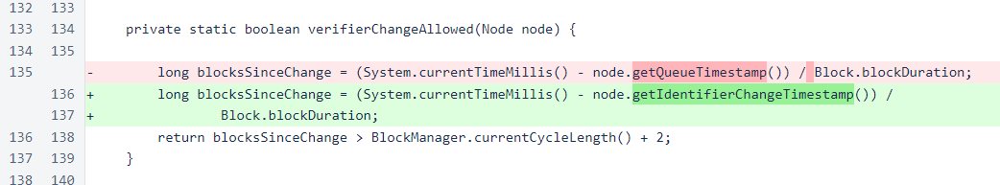
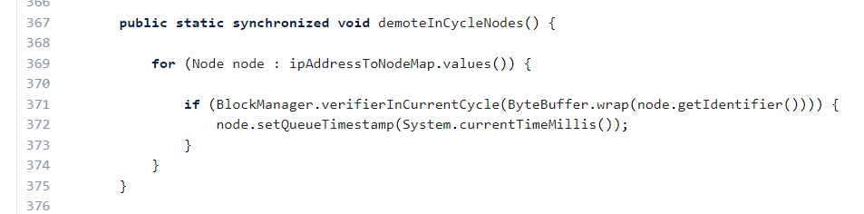
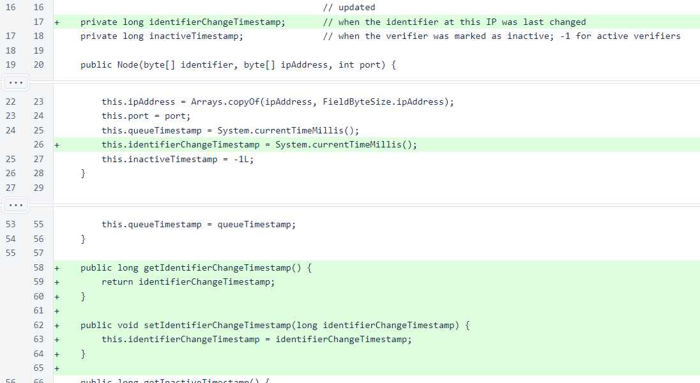
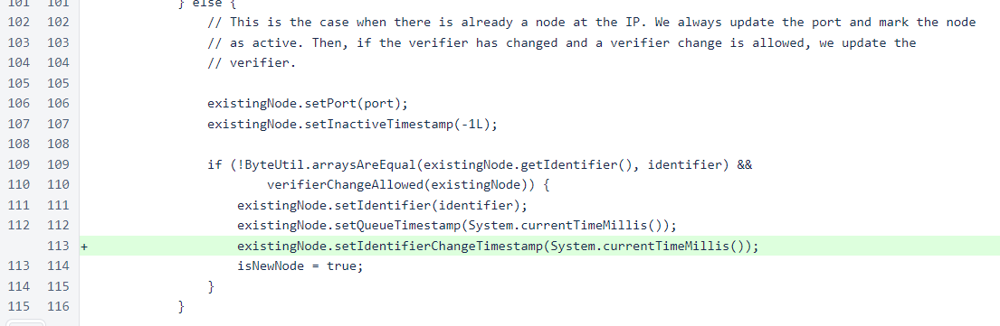

Nyzo version 507 (commit on GitHub) corrects an issue with in-cycle node identifier updates.
This version modifies code used by the verifier only. The sentinel is indirectly affected, however, as updating a verifier will allow it to provide more accurate information to sentinels. This is a minor update, and it can be skipped if you find it uninteresting.
The NodeManager class limits how frequently verifier identifiers can be changed for an IP. If frequent IP changes were allowed, a small number of IP addresses could be used to support a larger number of verifiers by frequently cycling IP addresses. This protection, though, was incorrectly disallowing all identifier changes of IP addresses assigned to in-cycle identifiers.
In the NodeManager class, the verifierChangeAllowed() method determines whether an update of the identifier for an IP address is permitted. Previously, this method referenced the queue timestamp of the verifier. This has been changed to reference a new field, identifierChangeTimestamp.
This new field was necessary because the queueTimestamp field was reset regularly on nodes that were in the cycle.
In the Node class, the new field and its getter and setter methods have been added. The field is set to the current timestamp in the constructor.
When a node at an existing IP address is updated, the identifier-change timestamp is updated. This is the only location where this field is updated outside of the Node constructor. So, unlike the queueTimestamp field, this field will not cause an identifier to be locked to an IP address indefinitely.
